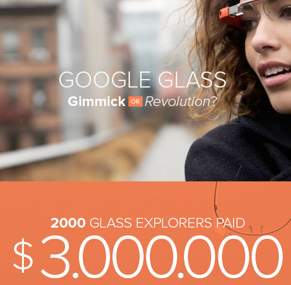

用微信扫一扫上方的二维码，
即可分享给您的微信好友或朋友圈。
《哈佛商业评论》（ Harvard Business Review，简称HBR）创建于1922年，是哈佛 的标志性杂志。建立之初，它的使命就是致力于改进管理实践。发展90年后，HBR已经成为 先进管理理念的发源地，致力于给全世界的专业人士提供缜密的管理见解和最好的管理实践， 天的还是最原生的全英文版本。《哈佛商业评论》（ Harvard Business Review，简称H 的标志性杂志。建立之初，它的使命就是致力于改进管理实践。发展90年后，HBR已经成为 先进管理理念的发源地，致力于给全世界的专业人士提供缜密的管理见解和最好的管理实践， 天的还是最原生的全英文版本。《哈佛商业评论》（ Harvard Business Review，简称H 先进管理理念的发源地，致力于给全世界的专业人士提供缜密的管理见解和最好的管理实践， 天的还是最原生的全英文版本。《哈佛商业评论》（ Harvard Business Review，简称H 的标志性杂志。建立之初，它的使命就是致力于改进管理实践。发展90年后，HBR已经成为 先进管理理念的发源地，致力于给全世界的专业人士提供缜密的管理见解和最好的管理实践， 天的还是最原生的全英文版本。
